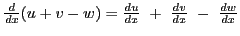
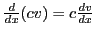
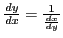

Next: Differentiation of a constant Up: Rules for differentiating standard Previous: Rules for differentiating standard Contents Index
The General Rule for differentiation, given in the last chapter, §4.7, is fundamental, being found directly from the definition of a derivative. It is very important that the student should be thoroughly familiar with it. However, the process of applying the rule to examples in general has been found too tedious or difficult; consequently special rules have been derived from the General Rule for differentiating certain standard forms of frequent occurrence in order to facilitate the work.
It has been found convenient to express these special rules by
means of formulas, a list of which follows. The student
should not only memorize each formula when deduced, but
should be able to state the corresponding rule in words. In
these formulas  ,
,  , and
, and  denote variable quantities
which are functions of
denote variable quantities
which are functions of  , and are differentiable.
, and are differentiable.
| I | |
| II | |
| III |  |
| IV |  |
| V |
|
The function used in (XVII) below is defined by . See http://en.wikipedia.org/wiki/Versine for a history of the versine function.
| VI | |
| VI a | |
| VII | |
| VII a |
|
| VIII | |
| IX | |
| IX a | |
| X | |
| XI |
|
| XII | |
| XIII | |
| XIV | |
| XV | |
| XVI | |
| XVII | |
| XVIII |
|
| XIX | |
| XX | |
| XXI |
|
Note: Sometimes ,  , and so on, are denoted
,
, and so on.
, and so on, are denoted
,
, and so on.
| XXII | |
| XXIII | |
| XXIV | |
| XXV |
|
| XXVI |
,
|
Here's how to see some of these using SAGE:
[fontsize=\scriptsize,fontfamily=courier,fontshape=tt,frame=single,label=\sage]
sage: t = var("t")
sage: diff(acos(t),t)
-1/sqrt(1 - t^2)
sage: v = var("v")
sage: diff(acsc(v),v)
-1/(sqrt(1 - 1/v^2)*v^2)
These tell us that and .
Here are some more examples ising SAGE:
[fontsize=\scriptsize,fontfamily=courier,fontshape=tt,frame=single,label=\sage]
sage: x = var("x")
sage: u = function('u', x)
sage: v = function('v', x)
sage: diff(u/v,x)
diff(u(x), x, 1)/v(x) - u(x)*diff(v(x), x, 1)/v(x)^2
sage: diff(sin(v),x)
cos(v(x))*diff(v(x), x, 1)
sage: diff(arcsin(v),x)
diff(v(x), x, 1)/sqrt(1 - v(x)^2)
The last SAGE computation verifies that
 .
.
david joyner 2008-08-11